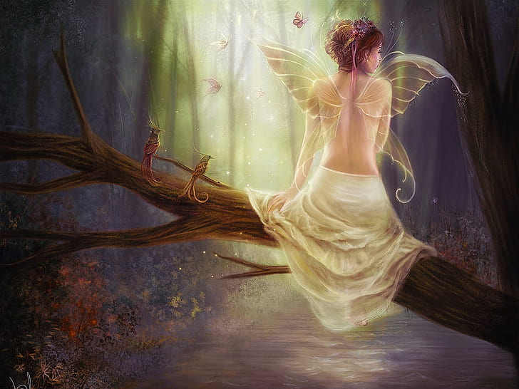

Um ser místico das mentes das crianças, são seres de transformação, responsáveis pela natureza e podendo ser retratada em duas formas: amigáveis e mortais.
As fadas também são seres característicos dos contos celtas e germânicos.celtas e germânicos .
Uma lenda pouco conhecida sobre as fadas é a de que elas são um subtipo de anjo caido, pela sua beleza e poder, nem bons o suficiente para ficar no paraiso, nem más o suficiente para ir pro inferno, e por isso elas permanecem na terra.
Falando em inferno, há também a lenda de que elas são seres vindos do inferno para atormentar, com sua beleza, aqueles que ainda não são pecadores. Essa hipótese foi trazida à tona pelo rei Jamees I (1566-1625)
Agora, uma lenda celta se refere a elas como aes sidhe, um ser que fica no caminho desse mundo e do outro (entre a vida e a morte), que tem grandes poderes e que voam através dele (sem asas).
Nso norte da Europa, esses seres conhecidos como lumens da natureza, andavam lado a lado no mundo mitológico com goblins, gnomos e goblins. Por outro lado, na mitologia mais próxima dos tempos atuais, as fadas pertenciam ao submundo. Consequentemente elas estiveram junto a crença do ser humano na vida além da morte.